Engine Unit: Disassembly
- REMOVE SPARK PLUG
- Using a 16 mm plug wrench, remove the 4 spark plugs.
- REMOVE THERMOSTAT
- Remove the 2 nuts and water inlet.
- Remove the thermostat.
- Remove the gasket from the thermostat.
- REMOVE OIL FILLER CAP
- Remove the oil filler cap from the cylinder head cover.
- REMOVE OIL FILLER CAP GASKET
- Using a screwdriver, remove the gasket from the oil filler cap.
HINT:
Tape the screwdriver tip before use.
- Using a screwdriver, remove the gasket from the oil filler cap.
- REMOVE CRANKSHAFT POSITION SENSOR
- Remove the bolt and crankshaft position sensor.
- REMOVE VENTILATION VALVE
- Remove the ventilation valve from the cylinder head cover.
- REMOVE CYLINDER HEAD COVER
- Remove the 9 bolts, 2 nuts and cylinder head cover.
- REMOVE CYLINDER HEAD COVER GASKET
- Remove the gasket from the cylinder head cover.
- REMOVE CAMSHAFT TIMING OIL CONTROL VALVE ASSEMBLY
- Remove the bolt and oil control valve.
- REMOVE OIL DIPSTICK GUIDE
- Remove the bolt and dipstick guide.
- REMOVE WATER PUMP PULLEY
- Using SST, hold the pump pulley and remove the 3 bolts and pump pulley.
SST 09960-10010 (09962-01000, 09963-00600)
- Using SST, hold the pump pulley and remove the 3 bolts and pump pulley.
- REMOVE CRANKSHAFT PULLEY
- Set the No. 1 cylinder to TDC/compression.
- Turn the crankshaft pulley until its timing notch and the timing mark 0 of the chain cover are aligned.
- Check that both timing marks on the camshaft timing sprocket and the camshaft timing gear are facing upward as shown in the illustration.
If not, turn the crankshaft 1 complete revolution (360°) and align the marks as above.
- Using SST, remove the pulley bolt.
SST 09213-58012 (91111-50845), 09330-00021
If necessary, remove the pulley with SST.
SST 09950-50013 (09951-05010, 09952-05010, 09953-05020, 09954-05021)
- Set the No. 1 cylinder to TDC/compression.
- REMOVE ENGINE MOUNTING BRACKET RH
- Remove the 4 bolts and engine mounting bracket RH.
- REMOVE WATER PUMP
- Remove the 3 bolts and 2 nuts.
- Remove the water pump and gasket.
- REMOVE TIMING CHAIN COVER
- Remove the 15 bolts and nut.
- Using a screwdriver with the tip wrapped in tape, remove the chain cover by prying between the cylinder head and cylinder block.
NOTE: Be careful not to damage the contact surfaces of the chain cover, the cylinder head and the cylinder block.
- Remove the 2 O-rings from the cylinder block and No. 1 oil pan.
- Using an 8 mm hexagon wrench, remove the screw plug from the oil pump.
- REMOVE OIL PUMP SEAL (See REPLACEMENT )
- REMOVE NO. 1 CHAIN TENSIONER NOTE:
- When rotating the camshaft with the timing chain removed, rotate the crankshaft counterclockwise 40° from the TDC and align the oil jet hole with the paint mark to prevent the pistons from coming into contact with the valves.
- Do not rotate the crankshaft with the chain tensioner removed.
- While rotating the stopper plate of the chain tensioner upward with a screwdriver, push in the plunger of the tensioner as shown in the illustration.
- While rotating the stopper plate of the tensioner downward, insert a 2.5 mm (0.098 in.) diameter bar into the holes of the stopper plate and the tensioner to hold the stopper plate.
- Remove the 2 bolts and chain tensioner.
- REMOVE CHAIN TENSIONER SLIPPER
- Remove the bolt and chain tensioner slipper.
- REMOVE NO. 1 CHAIN VIBRATION DAMPER
- Remove the 2 bolts and chain vibration damper.
- REMOVE CHAIN
- REMOVE FUEL DELIVERY PIPE
- Remove the 3 bolts and fuel delivery pipe together with the 4 fuel injectors.
- REMOVE FUEL INJECTOR
- Pull out the 4 injectors from the delivery pipe.
- REMOVE CAMSHAFT POSITION SENSOR
- Remove the bolt and camshaft position sensor.
- REMOVE NO. 2 CAMSHAFT
- Using several steps, uniformly loosen and remove the 11 bearing cap bolts in the sequence shown in the illustration, and then remove the 5 bearing caps and No. 2 camshaft.
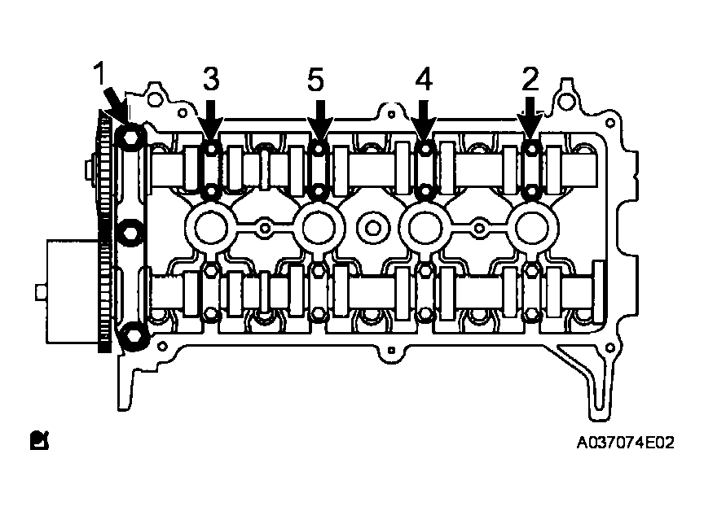
Courtesy of © TOYOTA, LICENSE AGREEMENT TMS1002NOTE: Loosen each bolt uniformly, keeping the camshaft level.
- Using several steps, uniformly loosen and remove the 11 bearing cap bolts in the sequence shown in the illustration, and then remove the 5 bearing caps and No. 2 camshaft.
- REMOVE CAMSHAFT TIMING SPROCKET
- Clamp the camshaft in a vise.
- Remove the flange bolt and camshaft timing sprocket.
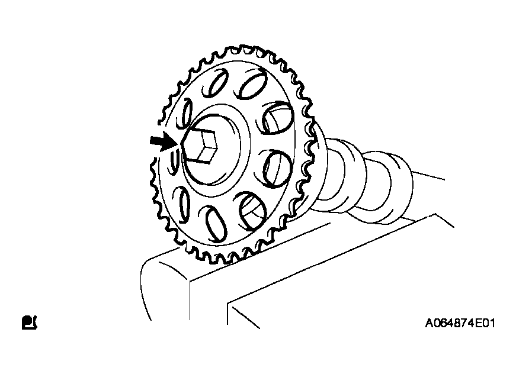
Courtesy of © TOYOTA, LICENSE AGREEMENT TMS1002NOTE: Be careful not to damage the camshaft.
- REMOVE CAMSHAFT
- Using several steps, uniformly loosen and remove the 8 bearing cap bolts in the sequence shown in the illustration, and then remove the 4 bearing caps and camshaft.
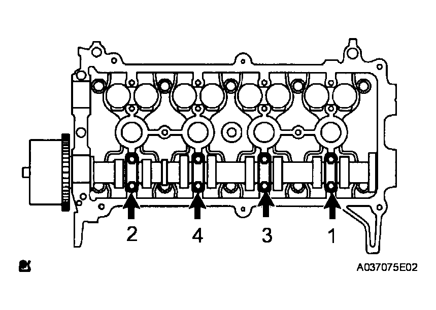
Courtesy of © TOYOTA, LICENSE AGREEMENT TMS1002NOTE: Loosen each bolt uniformly, keeping the camshaft level.
- Using several steps, uniformly loosen and remove the 8 bearing cap bolts in the sequence shown in the illustration, and then remove the 4 bearing caps and camshaft.
- REMOVE CAMSHAFT TIMING GEAR
- Turn the valve timing controller assembly at the most advanced angle (see ).
- Remove the flange bolt and camshaft timing gear.
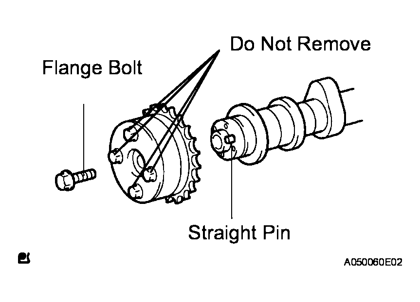
Courtesy of © TOYOTA, LICENSE AGREEMENT TMS1002NOTE:- Be careful not to remove the other 4 bolts.
- If reusing the camshaft timing gear, unlock the lock pin inside the camshaft timing gear first.
- REMOVE CYLINDER HEAD
- Using several steps, uniformly loosen and remove the 10 cylinder head bolts with an 8 mm bi-hexagon wrench in the sequence shown in the illustration.
Remove the 10 cylinder head bolts and plate washers.
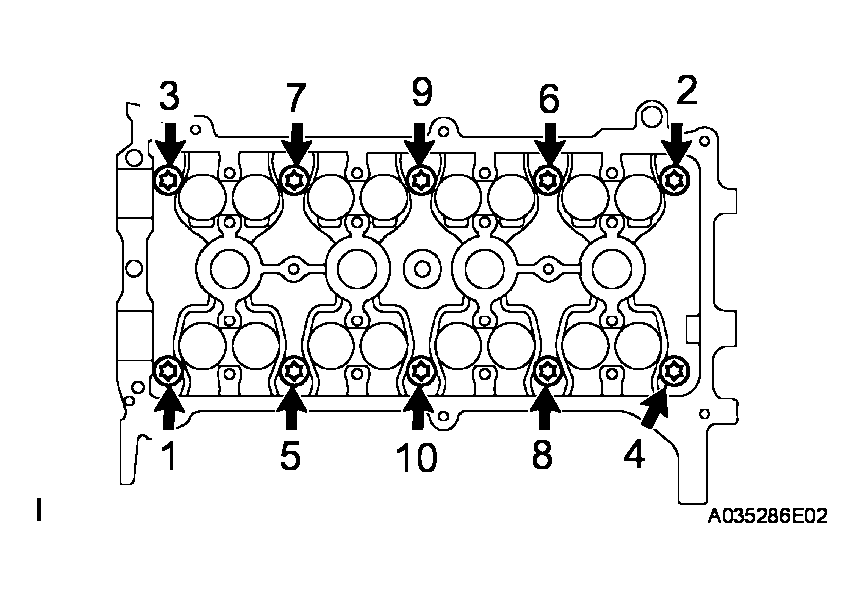
Courtesy of © TOYOTA, LICENSE AGREEMENT TMS1002NOTE:- Be careful not to drop washers into the cylinder head.
- Head warpage or cracking could result from removing bolts in the incorrect order.
- Using several steps, uniformly loosen and remove the 10 cylinder head bolts with an 8 mm bi-hexagon wrench in the sequence shown in the illustration.
- REMOVE CYLINDER HEAD GASKET
- REMOVE OIL FILTER
- Using SST, remove the oil filter.
SST 09228-06501
- Using SST, remove the oil filter.
- REMOVE OIL FILTER UNION
- Using a 12 mm hexagon wrench, remove the oil filter union.
- REMOVE ENGINE REAR OIL SEAL (See DISASSEMBLY )
- REMOVE NO. 2 OIL PAN
- Remove the oil pan drain plug and gasket.
- Remove the 9 bolts and 2 nuts.
- Insert the blade of SST between the oil pan and No. 2 oil pan, cut off the applied sealer and remove the No. 2 oil pan.
SST 09032-00100
NOTE: Be careful not to damage the oil pan and No. 2 oil pan.
- REMOVE OIL STRAINER
- Remove the bolt and 2 nuts.
- Remove the oil strainer and gasket.
- REMOVE OIL PAN
- Loosen and remove the 13 bolts uniformly in several steps.
- Using a screwdriver, remove the oil pan by prying between the cylinder block and oil pan.
NOTE: Be careful not to damage the contact surfaces of the oil pan and cylinder block.
- Remove the 2 O-rings from the cylinder block.
- Remove the 4 stud bolts.
- INSPECT CONNECTING ROD THRUST CLEARANCE
- Using a dial indicator, measure the thrust clearance while moving the connecting rod back and forth.
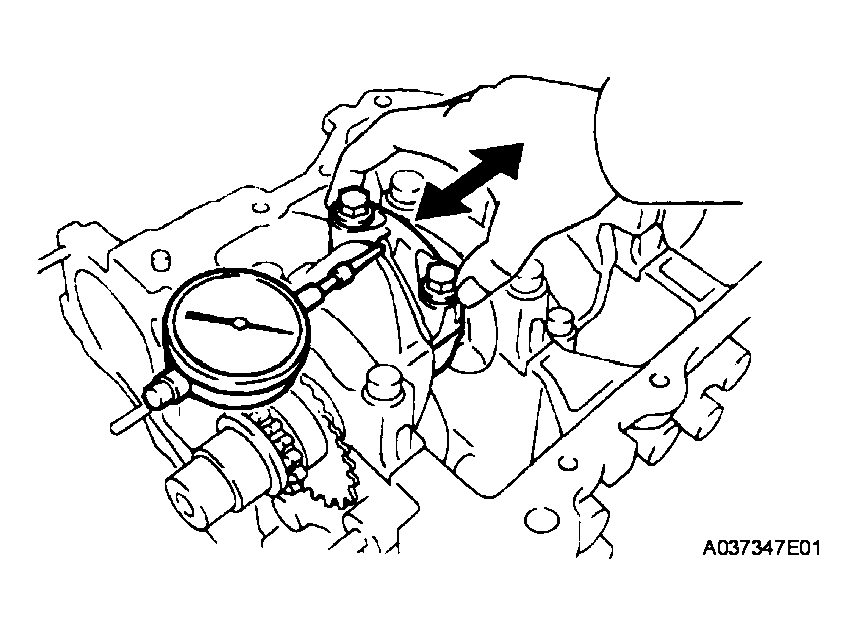
Courtesy of © TOYOTA, LICENSE AGREEMENT TMS1002Standard thrust clearance: 0.16 to 0.36 mm (0.0063 to 0.0142 in.)
Maximum thrust clearance: 0.36 mm (0.0142 in.)
If the thrust clearance is greater than the maximum, replace the connecting rod.
- Using a dial indicator, measure the thrust clearance while moving the connecting rod back and forth.
- INSPECT CONNECTING ROD OIL CLEARANCE
- Check that the matchmarks on the connecting rod and cap are aligned to ensure the correct reassembly.
- Using SST, remove the 2 connecting rod cap bolts.
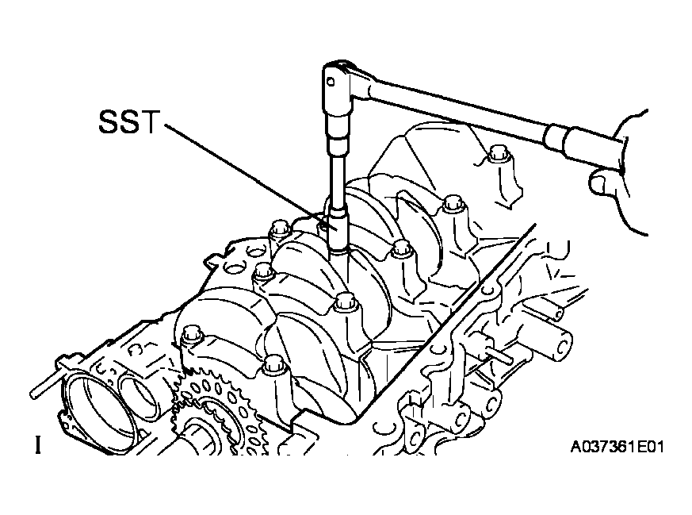
Courtesy of © TOYOTA, LICENSE AGREEMENT TMS1002SST 09205-16010
- Using the 2 removed connecting rod cap bolts, remove the connecting rod cap and lower bearing by wiggling the connecting rod cap right and left.
- Clean the crank pin and bearing.
- Check the crank pin and bearing for pitting and scratches.
- Lay a strip of Plastigage across the crank pin.
- Match together the connecting rod and cap in the correct combination. Then install the cap onto the connecting rod, making sure that the front mark on the cap is correctly oriented.
- Apply a light coat of engine oil to the threads of the connecting rod cap bolts.
- Using SST, tighten the bolts in several steps by the specified torque.
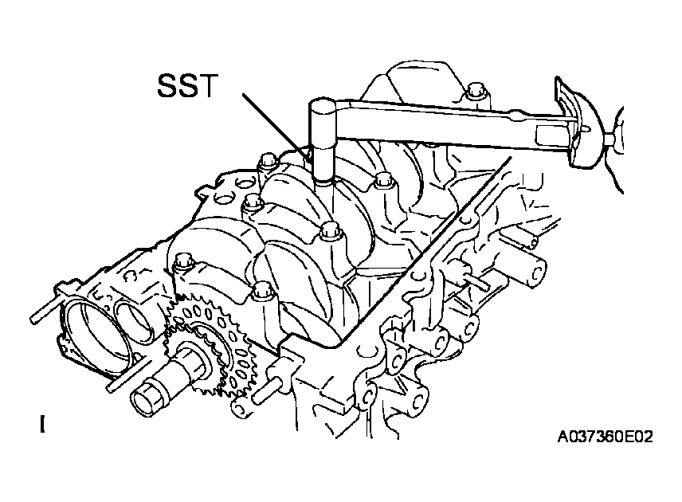
Courtesy of © TOYOTA, LICENSE AGREEMENT TMS1002SST 09205-16010
Torque: 15 N*m (153 kgf*cm, 11 ft.*lbf)
NOTE: Do not turn the crankshaft. - Mark the front of the connecting cap bolts with paint.
- Retighten the cap bolts by 90° as shown in the illustration.
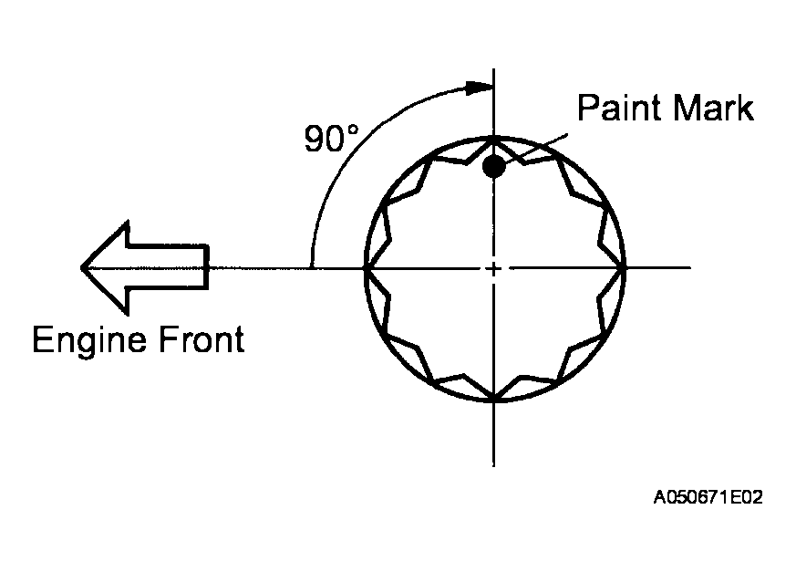
Courtesy of © TOYOTA, LICENSE AGREEMENT TMS1002NOTE: Do not turn the crankshaft. - Remove the 2 bolts, connecting rod cap and lower bearing.
- Measure the Plastigage at its widest point.
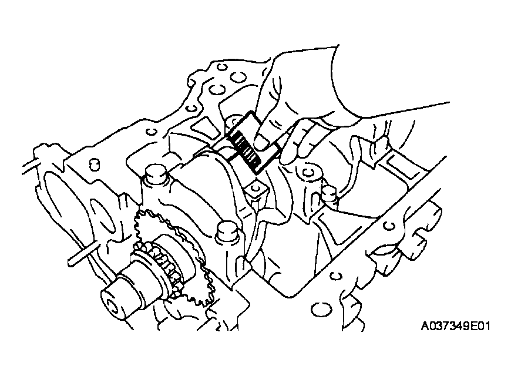
Courtesy of © TOYOTA, LICENSE AGREEMENT TMS1002Standard oil clearance: 0.016 to 0.040 mm (0.0006 to 0.0016 in.)
Maximum oil clearance: 0.06 mm (0.0024 in.)
NOTE: Completely remove the Plastigage. - If the oil clearance is greater than the maximum, select and replace the bearing. If necessary, use an undersized bearing.
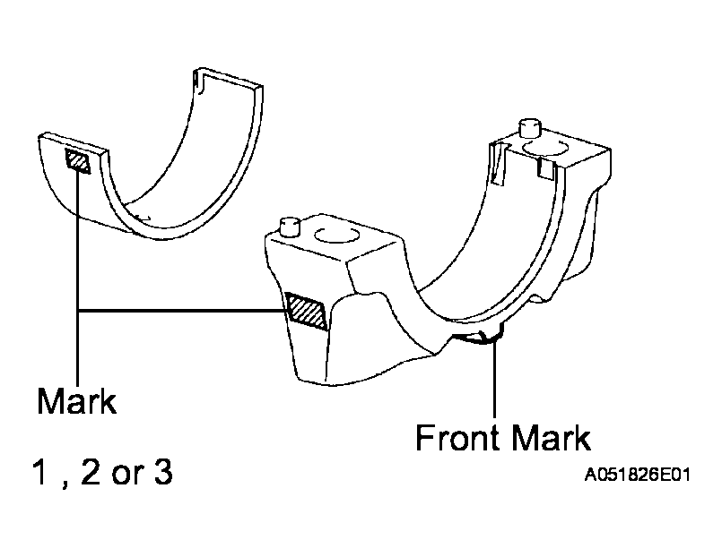
Courtesy of © TOYOTA, LICENSE AGREEMENT TMS1002Reference
CONNECTING ROD EXTERNAL DIAMETER AND CENTER BEARING THICKNESS SPECIFICATIONNumber Mark Connecting Rod External Diameter Center Bearing Thickness Oil Clearance 1 43.000 to 43.008 mm (1.6929 to 1.6932 in.) 1.491 to 1.494 mm (0.0587 to 0.0588 in.) 0.012 to 0.034 mm (0.0005 to 0.0013 in.) 2 43.008 to 43.016 mm (1.6932 to 1.6935 in.) 1.494 to 1.497 mm (0.0588 to 0.0589 in.) 0.014 to 0.036 mm (0.0006 to 0.0014 in.) 3 43.016 to 43.024 mm (1.6935 to 1.6939 in.) 1.497 to 1.500 mm (0.0589 to 0.0591 in.) 0.016 to 0.038 mm (0.0006 to 0.0015 in.) U/S 0.25 43.000 to 43.024 mm (1.6929 to 1.6939 in.) 1.608 to 1.614 mm (0.0633 to 0.0635 in.) 0.016 to 0.040 mm (0.0006 to 0.0016 in.)
- REMOVE PISTON WITH CONNECTING ROD
- Using a ridge reamer, remove all carbon from the top of the cylinder.
- Push the piston, connecting rod assembly and upper bearing through the top of the cylinder block.
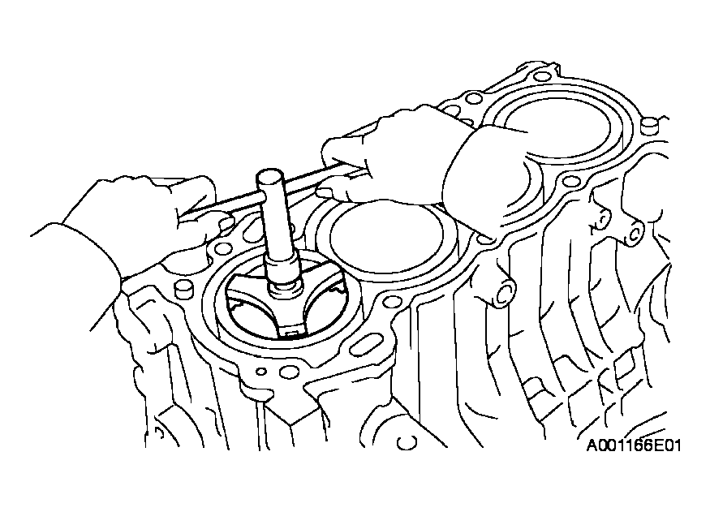
Courtesy of © TOYOTA, LICENSE AGREEMENT TMS1002HINT:
- Keep the bearing, connecting rod and cap together.
- Keep the piston and the connecting rod assemblies in the correct order so that they can be returned to the original locations when reassembling.
- REMOVE CONNECTING ROD BEARING
- INSPECT CRANKSHAFT THRUST CLEARANCE
- Using a dial indicator, measure the thrust clearance while prying the crankshaft back and forth with a screwdriver.
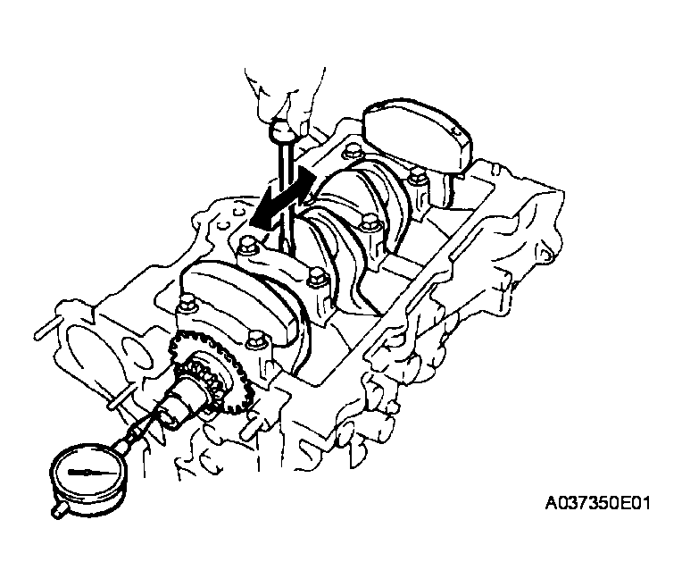
Courtesy of © TOYOTA, LICENSE AGREEMENT TMS1002Standard thrust clearance: 0.09 to 0.19 mm (0.0035 to 0.0075 in.)
Maximum thrust clearance: 0.30 mm (0.0118 in.)
If the thrust clearance is greater than the maximum, replace the thrust washers as a set. Check the crankshaft and block for wear, and repair or replace if necessary.
HINT:
Thrust washer thickness: 2.43 to 2.48 mm (0.0957 to 0.0976 in.)
- Using a dial indicator, measure the thrust clearance while prying the crankshaft back and forth with a screwdriver.
- REMOVE CRANKSHAFT AND INSPECT OIL CLEARANCE
- Using several steps, uniformly loosen and remove the 10 bearing cap bolts with SST in the sequence shown in the illustration.
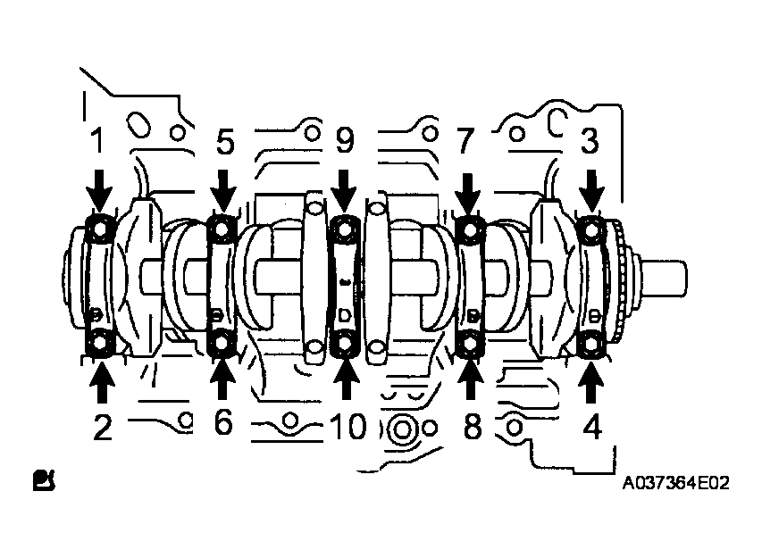
Courtesy of © TOYOTA, LICENSE AGREEMENT TMS1002SST 09011-38121
- Remove the 5 bearing caps and crankshaft.
- Clean each main journal and bearing.
- Install the upper bearing with the oil groove onto the cylinder block, and the lower bearing onto the bearing cap.NOTE: Do not apply engine oil to the contact surfaces of the cylinder block or the backside of the bearing.
HINT:
The mass production parts do not have claws as marks. If reusing the mass production parts, measure the clearance of both sides with the bearing in the center of the bearing cap.
Standard clearance:
A - B = within 0.8 mm (0.032 in.)
C - D = within 0.4 mm (0.016 in.)
- Install the crankshaft onto the cylinder block.
- Lay a strip of Plastigage across each journal.
- Check the front marks and numbers and install the bearing caps onto the cylinder block.
- Apply a light coat of engine oil to the threads of the bearing cap bolts.
- Using SST, tighten the bolts in several steps by the specified torque in the sequence shown in the illustration.
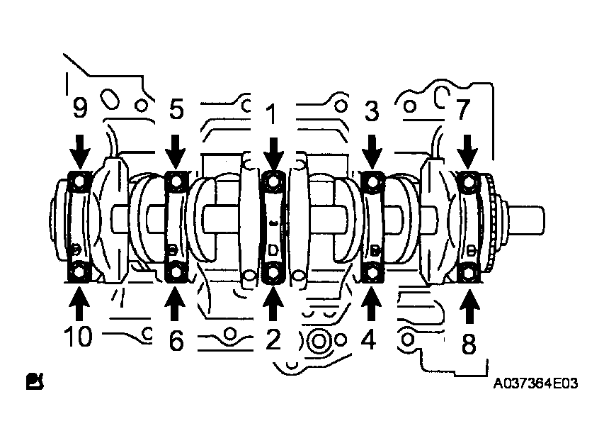
Courtesy of © TOYOTA, LICENSE AGREEMENT TMS1002SST 09011-38121
Torque: 22 N*m (224 kgf*cm, 16 ft.*lbf)
NOTE: Do not turn the crankshaft. - Mark the front of the bearing cap bolts with paint.
- Retighten the bearing cap bolts by 90° in the same sequence.
- Check that the painted mark is now at a 90° angle to the front.
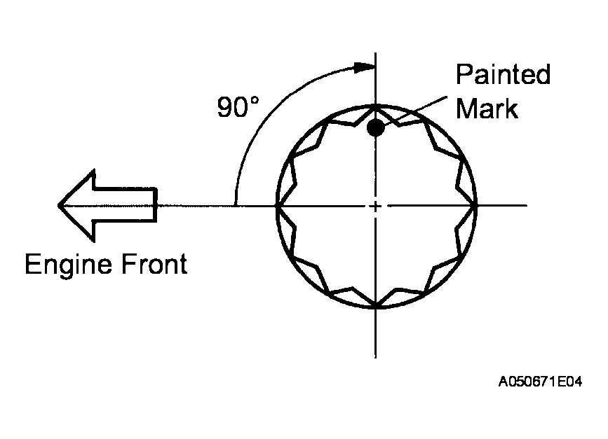
Courtesy of © TOYOTA, LICENSE AGREEMENT TMS1002NOTE: Do not turn the crankshaft. - Remove the bearing cap.
- Measure the Plastigage at its widest point.
Standard oil clearance: 0.010 to 0.023 mm (0.0004 to 0.0009 in.)
Maximum oil clearance: 0.07 mm (0.0028 in.)
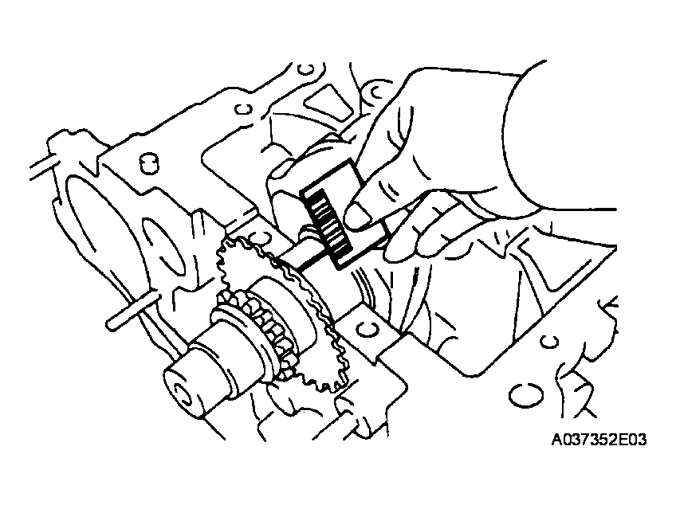
Courtesy of © TOYOTA, LICENSE AGREEMENT TMS1002NOTE: Completely remove the Plastigage.HINT:
- If the oil clearance is greater than the maximum, select and replace the bearing. If necessary, use an undersized bearing.
- To select the correct bearing size, calculate the bearing number by adding together the numbers imprinted on the cylinder block and crank journal.
Example:
Imprinted number on the cylinder block is 3.
Imprinted number on the crank journal is 5. 3 + 5 = 8 Select the bearing with the bearing number 3.
Standard cylinder block diameter
CYLINDER BLOCK DIAMETER SPECIFICATIONNumber Specified Condition 0 50.000 to 50.003 mm (1.9685 to 1.9686 in.) 1 50.003 to 50.005 mm (1.9686 to 1.9687 in.) 2 50.005 to 50.007 mm (1.9687 to 1.9688 in.) 3 50.007 to 50.010 mm (1.9688 to 1.9689 in.) 4 50.010 to 50.012 mm (1.9689 to 1.9690 in.) 5 50.012 to 50.014 mm (1.9690 to 1.9691 in.) 6 50.014 to 50.016 mm (1.9691 to 1.9691 in.) 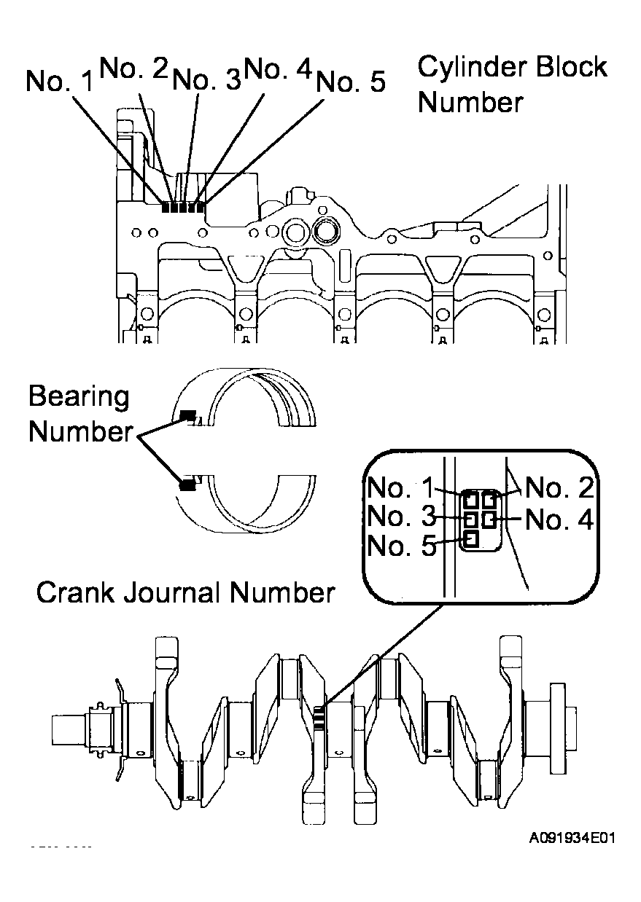
Courtesy of © TOYOTA, LICENSE AGREEMENT TMS1002Standard crankshaft journal diameter
CRANKSHAFT JOURNAL DIAMETER SPECIFICATIONNumber Specified Condition 0 45.998 to 46.000 mm (1.8109 to 1.8110 in.) 1 45.996 to 45.998 mm (1.8109 to 1.8109 in.) 2 45.994 to 45.996 mm (1.8108 to 1.8109 in.) 3 45.992 to 45.994 mm (1.8107 to 1.8108 in.) 4 45.990 to 45.992 mm (1.8106 to 1.8107 in.) 5 45.988 to 45.990 mm (1.8106 to 1.8106 in.) Reference
CENTER BEARING THICKNESS SPECIFICATIONCylinder Block Number + Crank Journal Number Bearing Number Center Bearing Thickness Oil Clearance 0 to 2 1 1.992 to 1.995 mm (0.0784 to 0.0785 in.) 0.010 to 0.023 mm (0.0004 to 0.0009 in.) 3 to 5 2 1.995 to 1.998 mm (0.0785 to 0.0787 in.) Same as above 6 to 8 3 1.998 to 2.001 mm (0.0787 to 0.0788 in.) Same as above 9 to 11 4 2.001 to 2.004 mm (0.0788 to 0.0789 in.) Same as above - U/S 0.25 2.111 to 2.117 mm (0.0831 to 0.0834 in.) Same as above
- Using several steps, uniformly loosen and remove the 10 bearing cap bolts with SST in the sequence shown in the illustration.
- REMOVE CRANKSHAFT BEARING
- REMOVE PISTON RING SET
HINT:
Keep the piston rings in the correct combination and correct order so that they can be returned to the original locations when reassembling.
- Using a piston ring expander, remove the 2 compression rings.
- Remove the 2 side rails and oil ring by hand.
- REMOVE PISTON PIN
- Using SST, press out the piston pin from the piston.
SST 09221-25026 (09221-00021, 09221-00030, 09221-00190, 09221-00141, 09221-00150)
NOTE: Keep the pistons, pins, rings, connecting rods and bearings in the correct order so that they can be returned to the original locations when reassembling.
- Using SST, press out the piston pin from the piston.
- REMOVE CYLINDER BLOCK WATER DRAIN COCK
- REMOVE STUD BOLT
- Using an E5 "Torx" wrench, remove the 6 stud bolts.
- REMOVE STRAIGHT PIN
- REMOVE END PLATE STRAIGHT PIN
- REMOVE TIGHT PLUG